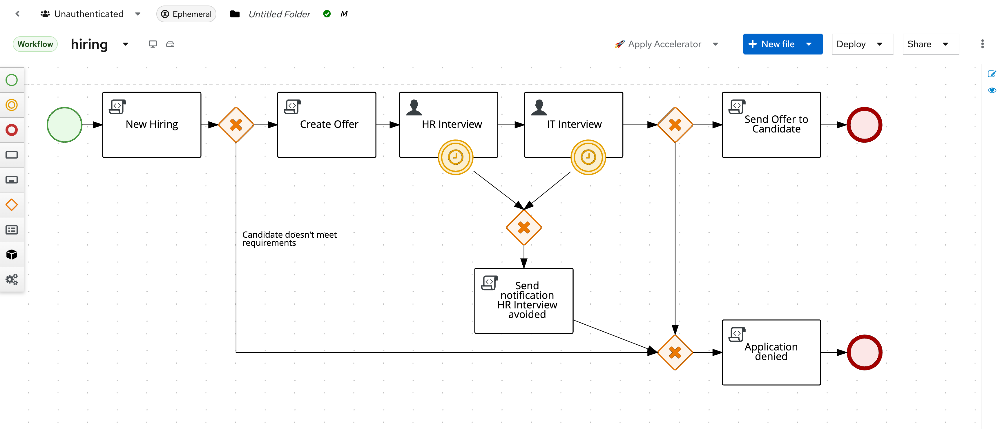

From Models to Execution: BPMN in Aletyx Playground¶
Introduction¶
Business Process Model and Notation (BPMN) is a standardized graphical notation for business process modeling. Aletyx Playground provides a powerful environment for creating, editing, and executing BPMN models. This getting started guide will walk you through exploring and understanding a sample hiring process, identifying key BPMN components, and deploying your process to different environments.
Accessing Aletyx Playground¶
Aletyx Playground is available in two formats:
A Free to use Cloud Option: - Navigate to playground.aletyx.ai - No installation required, just start playing immediately!
Your Own Containerized Option:
Then access Aletyx Playground at http://localhost:9090
The Aletyx Playground Interface¶
When you access Aletyx Playground, you'll see a welcome screen with several key areas:

1. Creation Area
The top tiles allow you to create new projects or import existing ones.
2. Import Area
Import existing projects or DMN/BPMN files either from various Git providers or through direct file uploads.
3. Projects Area
The lower section displays your locally imported projects and models.
Exploring the Sample Hiring Process¶
Let's examine a sample hiring process BPMN model that demonstrates various workflow patterns to get a basis for understanding what the Aletyx Enterprise Build of Kogito and Drools offers for process design and later process management:
-
From the welcome screen, click Try Sample under the Process section of the Aletyx Playground Create area to start seeing the basics of a BPMN workflow.
-
The hiring process BPMN model will open in the editor:
-
If you click the name Sample on the top of the editor, you can change the name. From a best practices point of view, this is typically best to match the process identification that is behind the processID for the BPMN model. For this change, we will shift it from Sample to hiring.
{kind=link}
{kind=link}
{kind=link}
The properties of the diagram will be explored in more detail later, but to understand the process ID and name, you can get a preview of the panel here
{kind=link}
Understanding the Hiring Process Flow¶
This hiring process demonstrates a complete hiring workflow with multiple branches:
- Start: The process begins with a "New Hiring" event that initializes the candidate evaluation.
- Decision Gateway: Evaluates if the candidate meets minimum requirements.
- Offer Creation: If qualified, an offer is created with salary and bonus calculations.
- Parallel Interviews: HR and IT interviews proceed in parallel.
- Interview Timeouts: Both interviews have timer events (180-second timeouts).
- Hiring Decision Gateway: Based on approvals from both departments.
- Final Steps: Either sending an offer or application denial.
Let's explore each piece in the diagram!
{kind=link}

kcontext.setVariable( "hr_approval", false) which is used to initialize the process variables associated with the process.
View Sample DMN Model

Key BPMN Components¶
1. Events¶
Events represent significant occurrences in a process. In our hiring process, we have:
- Start Event: Marks the beginning of the process
- End Events: Marks process completion
- Boundary Timer Events: The clock symbols attached to interview tasks that trigger after 180 seconds
2. Activities¶
Activities represent work performed in the process:
- Script Tasks: "New Hiring", "Create Offer", "Send notification HR Interview avoided", etc.
- User Tasks: "HR Interview" and "IT Interview" requiring human interaction
- Service Tasks: Automated tasks that execute system services (not in this example)
3. Gateways¶
Gateways control the flow of the process:
- Exclusive Gateways (Diamond with X): Decision points like "Candidate meets requirements?"
- Parallel Gateways: Points where the process splits into parallel paths (not explicitly shown but parallel flow exists)
- Inclusive Gateways: Points where some paths are taken based on conditions (not in this example)
4. Sequence Flows¶
The arrows connecting the elements represent the sequence of execution:
- Normal Flow: Standard progression path
- Conditional Flow: Follows specific conditions (e.g., "Candidate doesn't meet requirements")
- Default Flow: Followed when no other conditions are met
5. Data Objects¶
Data that flows through the process:
- Process Variables:
candidate,experience,skills,category,salary - Input/Output Mappings: Data passed between tasks
Working with the BPMN Editor¶
Understanding the Editor Interface¶
- Left Palette: Contains BPMN elements you can drag onto the modeller
- Modeller: The main editing area where you build your process
- Properties Panel: Right-side panel for configuring selected elements
- Top Menu: Tools for saving, deploying, and validating your model
Exploring Element Properties¶
Let's examine the properties of key elements:
- HR Interview Task Properties:
- Click on the "HR Interview" task to select it
- Open the properties panel (right side)
-
Observe:
- General: Name, ID, Documentation
- Implementation: User task details
- Data Assignments: Input/Output mappings
- Actors: Who can perform this task ("jdoe")
-
Gateway Properties:
- Click on the gateway after "Create Offer"
-
The properties panel shows:
- Gateway type
- Default flow
- Outgoing conditions
-
Script Task Properties:
- Click on the "Create Offer" script task
- Examine the script content calculating salary and bonus
// Example script from "Create Offer" task
if(experience <= 5) {
salary = 30000;
category = "Software Engineer";
} else if (experience <= 10) {
salary = 40000;
category = "Senior Software Engineer";
} else {
salary = 50000;
category = "Software Architect";
}
bonus = skills.split(",").length * 150;
kcontext.setVariable("category", category);
kcontext.setVariable("salary", salary);
kcontext.setVariable("bonus", bonus);
Modifying the Process¶
Let's make some modifications to understand the editor better:
Adding a New Task¶
- From the left palette, drag a "User Task" onto the modeller after "Create Offer"
- Connect it to the flow:
- Click on the sequence flow between "Create Offer" and "HR Interview"
- Delete it by pressing Delete/Backspace
- Use the arrow tool to connect "Create Offer" to your new task
- Connect your new task to "HR Interview"
- Configure the task:
- Name it "Manager Approval"
- Set the actor to "manager"
- Add data inputs/outputs as needed
Adding a Condition to a Gateway¶
- Click on the exclusive gateway after "New Hiring"
- In the properties panel, select a sequence flow to edit
- Add a condition like:
return experience >= 2;
Adding a Service Task¶
- Drag a "Service Task" from the palette to the modeller
- Configure it with:
- Name: "Background Check"
- Implementation: Select "Java" implementation type
- Class name:
org.acme.hiring.BackgroundCheckService - Method:
performCheck
Process Variables and Data Flow¶
The hiring process uses several variables:
- Input Variables:
candidate(String): Candidate's nameexperience(Integer): Years of experience-
skills(String): Comma-separated list of skills -
Process Variables:
hr_approval(Boolean): HR interview approval-
it_approval(Boolean): IT interview approval -
Output Variables:
category(String): Job category based on experiencesalary(Integer): Base salary calculationbonus(Integer): Bonus calculation based on skills
Data Mapping Example¶
Let's examine how data is passed between tasks:
- HR Interview Task:
- Inputs:
candidate: Candidate nameapprove: Current approval status (hr_approval)category: Job categorybaseSalary: Salary amountbonus: Bonus amount
- Outputs:
approve: Updated approval status (hr_approval)category: Potentially modified categorybaseSalary: Potentially modified salarybonus: Potentially modified bonus
Process Execution and Testing¶
Testing Your BPMN Process¶
- Click the "Deploy" button in the top-right corner
- Select "Deploy to Dev" option
- Once deployed, click "Start Process"
- Enter test data:
- Candidate: "John Doe"
- Experience: 8
- Skills: "Java,Spring,Drools"
- Click "Start" to begin the process instance
- Navigate to the "Instances" tab to see the running process
- Complete user tasks as they appear in the "Tasks" tab
Monitoring Process Execution¶
- In the "Instances" tab, click on a running instance
- View the process diagram with highlighted current state
- Examine the "Variables" tab to see current values
- Check the "Logs" tab for execution history
Deployment Options¶
Local Deployment¶
For local testing with the Dev Deployment option:
- Click "Deploy" in the top menu
- Select "Deploy to Dev"
- Access runtime at http://localhost:9090/management
Kubernetes Deployment¶
For deploying to Kubernetes:
- Set up Kubernetes configuration:
- Click on the Profile icon (👤)
- Select "Kubernetes" tab and add your cluster
- Deploy to Kubernetes:
- Click "Deploy" in the top menu
- Select your Kubernetes environment
- Configure deployment options (replicas, resources)
- Click "Deploy"
Integrating BPMN with DMN¶
The hiring process could be enhanced with decision models:
- Create a DMN model for determining eligibility:
- Click "New File" > "Decision"
- Name it "CandidateEligibility"
- Create decision table with inputs for experience and skills
-
Connect it to your BPMN model
-
Integrate the DMN with your BPMN:
- Replace the exclusive gateway condition with a business rule task
- Configure the task to call your DMN model
- Map process variables to DMN inputs/outputs
Java Application Integration¶
Setting Up a Java Project¶
<!-- Maven dependency for KIE API -->
<dependency>
<groupId>org.kie</groupId>
<artifactId>kie-api</artifactId>
<version>10.0.0</version>
</dependency>
Invoking the Process from Java¶
import org.kie.kogito.process.Process;
import org.kie.kogito.process.ProcessInstance;
@Inject
Process<HiringModel> hiringProcess;
public void startHiringProcess(String candidate, int experience, String skills) {
HiringModel model = HiringModel.builder()
.candidate(candidate)
.experience(experience)
.skills(skills)
.build();
ProcessInstance<HiringModel> instance = hiringProcess.createInstance(model);
instance.start();
}
Next Steps¶
Now that you're familiar with BPMN in Aletyx Playground, here are some recommended next steps:
- Create Custom Service Tasks: Develop Java components for integration
- Use Process Variables: Define complex data structures
- Add Error Handling: Implement boundary error events and compensation
- Create Multi-Instance Tasks: Handle collections of data in parallel
- Build End-to-End Applications: Combine BPMN with DMN and Java services